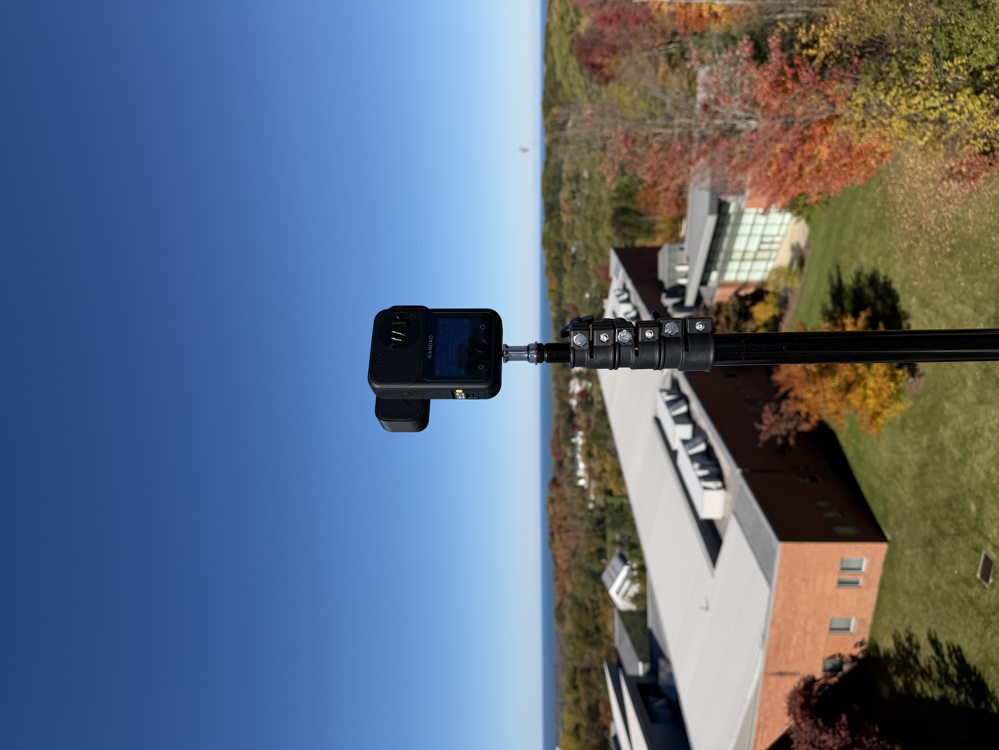

This project involved filming a series of VR180 immersive videos using a QooCam Ultra VR180 camera (modded configuration). The footage was captured with the intent of preserving depth, scale, and presence for headset-based viewing rather than traditional flat video.
I handled the full post-production workflow, including stitching, color correction, spatial framing, and final edits using Adobe After Effects and Adobe Premiere Pro. The finished VR180 videos were exported in headset-ready formats and published to DEOVR for public viewing.
This work explores practical pipelines for producing accessible, high-quality VR video content that can be experienced directly in modern VR headsets without additional setup.
DEOVR Links:
VAR Lab DEOVR Channel
VR180 Video 1
VR180 Video 2
VR180 Video 3
VR180 Video 4